CentOS7通过http方式搭建本地yum源
部署PXE远程安装服务
PXE 是由Intel公司开发的网络引导技术，工作在Client/Server 模式，允许客户机通过网络从远程服务器下载引导镜像，并加载安装文件或者整个操作系统。
若要搭建PXE 网络系统，必须满足以下几个前提条件。
1）客户机的网卡支持PXE 协议（集成BOOTROM 芯片），且主板支持网络引导。
2）网络中有一台DHCP服务器以便为客户机自动分配地址，指定引导文件位置。
3）服务器通过TETP(Trivial File Transfer Protocol，简单文件传输协议)提供引导镜像文件的下载。
其中，第一个条件实际上是硬件要求，目前绝大多数服务器和大多数PC都能够提供此支持，只需在BIOS 设置中允许从Network 或LAN 启动即可。
####PXE，Pre-boot eXcution Environment
预启动执行环境，在操作系统之前运行
可用于远程安装、构建无盘工作站
####服务端
运行DHCP服务，用来分配地址、定位引导程序
运行TFTP服务器，提供引导程序下载
####客户端
网卡支持PXE协议
主板支持网络启动
搭建PXE 远程安装服务器
本例的 PXE 远程安装服务器集成了 CentOS 7安装源，TFTP服务，DHCP服务，能够向客户机裸机发送PXE 引导程序，Linux内核，启动菜单等数据，以及提供安装文件。
###基本部署过程
准备CentOS 7 安装源（YUM仓库）
启用TFTP服务，并提供内核、引导程序
启用DHCP服务，用来分配地址、指出引导程序位置
配置启动菜单
1. 准备CentOS 安装源
CentOS 7 的网络安装源一般通过 HTTP,FTP 协议发布，另外也支持NFS（Network File System，网络文件系统）协议。
采用FTP 协议发布安装源，可以在服务器上部署一个YUM 软件仓库。
1 | [root@ns1 ~]# mkdir /var/ftp/centos7 |
2. 安装并启动TFIP 服务
TFTP 服务由 tftp-server 软件包提供，默认由 xinetd 超级服务进行管理，依次配置文件位于/etc/xinetd.d/tftp 。
配置时只要将 “disable = yes”改为“disable = no”，然后启动 xinetd 服务即可。
1 | [root@ns1 ~]# yum -y install tftp-server |
3. 准备linux内核 ，初始化镜像文件
用于 PXE 网络安装的Linux内核，初始化镜像文件可以从 CentOS 7 系统光盘获得，分别为 vmlinuz 和 initrd.img，位于文件夹 images/pxeboot 下。找到这两个文件并将其复制到tftp 服务的根目录下。
准备内核文件 vmlinuz ，初始化镜像文件 initrd.img 。
1 | [root@ns1 ~]# cd /var/ftp/centos7/images/pxeboot/ |
4. 准备 PXE 引导程序，启动菜单文件
用于 PXE 网络安装的引导程序为 pxelinux.0 ，由软件包 syslinux 提供。安装好软件包 syslinux，然后将文件 pxelinux.0 也复制到 tftp服务的根目录下。
准备引导程序文件 pxelinux.0 。
1 | [root@ns1 ~]# yum -y install syslinux |
启动菜单用来指定客户机的引导过程，包括如何调用内核，如何加载初始化镜像。
默认的启动菜单文件为 default，应放置在 tftp 根目录的 pxelinux.cfg 子目录下。
典型的启动菜单配置可参考以下操作手动建立。
1 | [root@ns1 ~]# mkdir /var/lib/tftpboot/pxelinux.cfg |
其中，prompt 用来设置是否等待用户选择；label 用来定义并分隔启动项；kernel 和 append 用来定义引导参数。
实现无人值守安装时只需要一个如果就够了。
5. 安装并启用DHCP 服务。
由于 PXE 客户机通常是尚未装系统的裸机，因此为了与服务器取得联系并正确下载相关引导文件，需要预先配置好 DHCP 服务来自动分配地址并告知引导文件位置。
1 | [root@ns1 ~]# yum -y install dhcp |
验证 PXE 网络安装
搭建好的 PXE 远程安装服务器以后，就可以使用客户机进行安装测试了。对于新购买的服务器或PC裸机，一般不需要额外设置；若要为已有系统的主机重装系统，则可能需要修改 BIOS 设置，将 “Boot First” 设为 “NETWORK” 或 “LAN”, 然后重启主机。
实现 Kickstart 无人值守安装
要实现无人值守自动安装，通过使用 Kickstart 工具配置安装应答文件，自动完成安装过程中的各种设置，从而无需手动干预，提高网络装机效率，同时也可以在应答文件中通过添加 %post 脚本，完成安装后的各种配置操作。
kickstart无人值守技术
1）创建应答文件，预先定义好各种安装设置。
2）免去交互设置过程，从而实现全自动化安装。
3）通过添加%post脚本，完成安装后的各种配置操作。
准备安装应答文件
在CentOS 7 系统中安装 system-config-kickstart 工具之后，即可通过图形化向导工具来配置安装应答文件。
如果用户对自动应答文件的配置比较熟悉，也可以直接编辑 自动创建的应答文件 （/root/anaconda-ks.cfg）。
1.配置安装应答参数
通过桌面菜单 “应用程序” → “系统工具” → “Kickstart” 即可打开 “Kickstart 配置程序”窗口。在“Kickstart
配置程序”窗口中，可以针对 基本配置，安装方法，引导装载程序选项，分区信息，网络配置等各种安装设置进行指定。
#####(1)基本配置及安装方法
“基础配置” 例如，将默认语言设置为“Eenglish” 时区设置为 “Asia/Shanghai” 根口令设为“1”。
在 “安装方法” 界面中，应正确指定 CentOS 7的安装方法，
#####(2)分区信息
需正确规划硬盘划分方案。
例如，可划分一个500MB的boot分区，4GB的home分区，2GB的 swap分区，将剩余空间划分给根分区，
#####(3)网络配置及防火墙配置
在 “网络设置” 界面中，添加一个网络设备 “eth0”，将网络类型设为“DHCP”。
在 “防火墙配置” 界面中，可以选择禁用 SELinux ，禁用防火墙。
#####(4)软件包选择
在 “软件包选择” 界面中，根据实际需要选择要安装的软件包分组。
#####(5)安装脚本
在 “预安装脚本” “安装后脚本” 界面中，可以分别添加在安装前，安装后自动运行的可执行语句。
###** “引导装载程序选项” 界面要选择 安装新引导装载程序
2. 保存自动应答文件
选择 “Kickstart 配置程序”窗口的 “文件” → “保存” 命令，指定目标文件夹，文件名，将配置好的应答参数保存为文本文件。
1 | [root@ns1 ~]# grep -v ^# /root/ftp.cfg |
实现批量自动装机
有了自动安装的应答文件之后，只要将其放置在 PXE 安装服务器的 FTP 目录下，并适当修改引导菜单，就可以实现基于网络的批量自动装机了。
1. 启用启动应答文件
在 PXE 远程安装服务器中，将上一节建立的应答文件复制到 /var/ftp/centos7 目录下，使客户端能够通过 ftp://192.168.160.7/centos7/ftp.cfg 访问。然后编辑引导菜单文件 default，添加 ks 引导参数以指定 ftp.cfg 应答文件的URL路径。
1 | [root@ns1 ~]# cp /root/ftp.cfg /var/ftp/centos7/ftp.cfg |
验证无人值守安装
启动自动应答安装之后，当客户机每次以 PXE 方式引导时，将自动下载 ftp.cfg
应答配置文件，然后根据其中的设置安装CentOS7系统，无须手工干预。
vim 配置自动应答文件
1 | # Kickstart file automatically generated by anaconda. |
#####linux 最小安装样本
1 |
|
本章总结
实现 PXE 远程装机要求网卡支持 PXE 功能，且必须有 Linux 安装源，以及可用的 TFTP，DHCP 服务器
无人值守的应答文件可通过 Kickstart 配置程序来完成，该程序由 system-config-kickstart软件包提供。
NFS共享存储服务
NFS 是一种基于 TCP/IP 传输的网络文件系统协议，最初由sun公司开发。通过使用NFS协议，NFS客户机可以像访问本地目录一样访问远程NFS服务器中的共享资源。对于大多数负载均衡群集来说，使用NFS协议来共享数据存储是比较常见的做法，NFS也是NAS存储设备必然支持的一种协议。但是，NFS 没有用户认证机制，而且数据在网上明文传输，所以安全性很差，一般只能在局域网中使用。
NFS 应用场景
在企业集群架构的工作场景中，特别是中小型网站公司，NFS网络文件系统一般被用来存储共享视频，图片等静态资源文件。
NFS 服务的实现依赖于 RPC（Remote Process Call，远程过程调用）机制，RPC 充当NFS 客户端和NFS 服务器的中介，以完成远程到本地的映射过程。
在CentOS7 系统中，需要安装 nfs-utils (用于NFS 共享发布和访问)； rpcbind （用于RPC支持）。
安装 nfs-utils，rpcbind 软件包
1 | [root@ns1 ~]# yum -y install nfs-utils rpcbind |
设置共享目录
NFS 的配置文件为/etc/exports ，文件内容默认为空（无任何共享）。
在 exports文件中设置共享资源时，记录格式为“目录位置 客户机地址(权限选项)”。
######例如：将文件夹/media/loop 共享给192.168.160.5 网址使用，允许读写操作，
1 | [root@ns1 ~]# mkdir -p /media/loop |
######其中客户机的地址可以是主机名，IP地址，网段地址，允许使用“* ” “？”通配符；
权限选项中的 rw 表示允许读写（ro 为只读），sync 表示同步写入，no_root_squash 表示当客户机以root身份访问时赋予本地root权限（默认是root_squash,将作为nfsnobody 用户降权对待）。
当需要将同一个目录共享给不同的客户机时，且分配不同的权限时，只要以空格分隔指定多个“客户机（权限选项）”即可。
例如，将/media/loop 目录共享给两个客户机，并分别给予只读，读写权限；
1 | [root@ns1 ~]# vim /etc/exports |
启动NFS服务程序
1 | [root@ns1 ~]# systemctl start rpcbind |
查看本机发布的NFS共享目录
1 | [root@ns1 ~]# showmount -e |
在客户机中访问NFS共享资源
NFS 协议的目标是提供一种网络文件系统，因此对NFS共享的访问也是用mount命令来进行挂载，对于的文件系统类型为nfs。
既可以手动挂载，也可以加入fstab 配置文件来实现开机自动挂载。
安装rpcbind 软件包，并启动rpcbind服务
1 | [root@localhost ~]# yum -y install rpcbind nfs-utils |
若已经安装了 nfs-utils 软件包，则客户机也可以使用showmount 查看NFS服务器端共享了那些目录，
查询格式为“showmount -e 服务器地址”。
1 | [root@ns2 ~]# showmount -e 192.168.160.7 |
手动挂载NFS 共享目录
以root的身份执行mount操作，将NFS服务器共享的/home 目录挂载到本地目录 /var/kgc。
与挂载本地系统不同的是，设备处应指出服务器地址。
1 | [root@ns2 ~]# mkdir /var/kgc |
fstab 自动挂载设置
修改 /etc/fstab 配置文件，加入NFS共享目录的挂载设置。注意将文件系统类型设为nfs，挂载参数建议添加_netdev(设备需要网络)； 若添加 soft ，intr 参数可以实现软过载，允许在网络中断时放弃挂载。
1 | [root@ns2 ~]# vim /etc/fstab |
强制卸载 NFS
NFS 客户端与服务器端的耦合度非常高的，如果客户端正在挂载使用，服务器端的NFS服务突然间停掉了，那么客户端就会出现执行df -h 命令卡死的现象。这个时候使用umont 命令是无法直接卸载的，需要加上 -lf 才能卸载。
当出现卡死现象时，要重新开一终端，执行 cat/etc/rc.local 命令，查看挂载点。
然后使用 umonut命令卸载，其中 -l表示解除正在繁忙的文件系统， -f表示强制。
1 | [root@ns2 ~]# umount /mnt |
###NFS 常见故障解决思路
当NFS共享无法挂载使用时，首先要检查配置文件的正确性，查看是否允许该网段的访问，然后将服务端的NFS服务和rpcbind服务都要开启，同时客户端也要开启rpcbind服务，这是能够成功挂载使用NFS共享存储的大前提。
在两边服务器都开启的情况下，如果客户端挂载共享存储出现长时间挂载等待的情况，此时要ping服务器的地址，检测客户端到服务器端的网络是否正常。
如果客户端到服务器端的网络是没有问题的，但是还是无法 mount挂载使用，可以使用 telntr 命令加服务器端的地址和端口号，远程连接服务器。当出现“connected to ……”的字样时，表示已经连接上了。这就表示客户端与服务器是通的。
客户端无法正常访问服务器端，也有可能是 iptables导致的，使用telnet 命令连接服务器时会显示“no route to host”的字样，这就表示时防火墙的问题。在服务器端本地 telnet 自己，如果正常就表示服务器端时没有问题的。
当然也可以使用 showmount -e 命令检查，或者是在服务端 mount 挂载自己本地共享的目录看能否挂载成功。
NFS 客户端mount 的挂载参数说明
在linux 系统中，可以使用 mount命令挂载光盘镜像文件，移动硬盘，U盘以及Windows 网络共享和UNIX NFS网络共享。
mount -o 命令后面常用参数
noatime ：不更新文件系统上的inode访问时间，高并发环境下应该使用该选项，可以提高1/0 性能。
nodiratime ：不更新文件系统上的 directory inode 访问时间，高并发环境下推荐使用该选项，可以提高1/0 性能。
noexec ：不允许执行程序，但是 shell，PHP 程序还是可以执行的。
nosuid ：不允许设置 uid。
remount ：尝试重新挂载一个已经挂载了的文件系统，这通常被用来改变文件系统的挂载标志，从而使得一个只读文件系统变得可写，这个动作不会改变设备或者挂载点。
ro ：挂载一个只读文件系统。
rw ：挂载一个可写的文件系统。
sync ：有 1/0操作时，会同步处理 1/0，把数据同步写入硬盘。使用此参数会影响1/0性能，但是可以保证数据的安全性。
mount 挂载及 fstab 文件的参数表格
查看客户端挂载的参数
在Linux 下使用 “grep mnt /proc/mounts” 命令可以查看客户端挂载参数。
本章总结
YUM 软件仓库主要通过 HTTP 或 FTP 方式进行发布，且需要提供 repodata 数据，其中包含所有 rpm包文件的头信息。
使用yum 命令查询软件包时，可用的子命令包括 list ，info，search，分别用于查询软件包列表，查询软件包的描述信息，查询指定的软件包。
使用 yum 命令安装，升级，卸载软件包时，对应的子命令分别为 install ，update，remove。
NFS 服务的实现依赖于 RPC机制，RPC 充当NFS 客户端和NFS 服务器的中介。在 CentOS 7 系统中，需要安装 nfs-utils ，rpcbind 软件包来提供 NFS共享服务，前者由于 NFS共享发布和访问，后者用于 RPC支持。
对 NFS 共享的访问使用 mount 命令来进行挂载，对应的文件系统类型为 nfs。既可以手动挂载，也可以加入 fstab 配置文件来实现开机自动挂载。
部署YUN仓库及NFS共享服务
YUM, Yellow dog Updater Modified
基于RPM包构建的软件更新机制。
可以自动解决依赖关系
所有软件包由集中的YUM软件仓库提供。
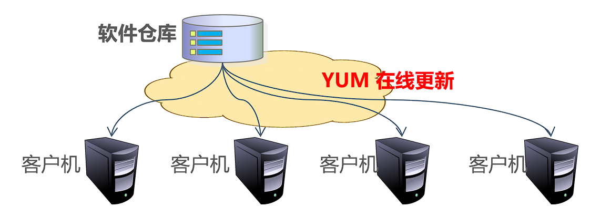
软件仓库的提供方式
FTP服务：ftp://……
HTTP服务：http://……
本地目录：file://……
RPM软件包的来源
CentOS发布的RPM包集合
第三方组织发布的RPM包集合
用户自定义的RPM包集合
构建CentOS 7 软件仓库
RPM包来自CentOS 7 DVD光盘
通过FTP,HTTP或本地目录提供给客户。
######1）准备软件仓库目录
1 | [root@ns1 ~]# mkdir cdrom |
######安装并启动vsftpd 服务
1 | [root@localhost ~]# rpm -ivh /media/cdrom/Packages/vsftpd-3.0.2-21.el7.x86_64.rpm |
######验证
1 | [root@ns2 cdrom]# ftp |
#####在软件仓库中加入非官方RPM包组
对于用户搜集的非CentOS7 光盘自带的更多其他软件包（必须包括存在依赖关系的所有安装文件），除了应准备相应的目录之外，还需要手动创建仓库（repodata）数据文件，这就要用到createrepo工具。
包括存在依赖关系的所有RPM包。
使用createrepo 工具建立仓库数据文件。
1 | [root@localhost ~]# mkdir /var/ftp/other |
###为客户机指定YUM仓库位置
配置文件：/etc/yum.repos.d/* .repo
1 | [root@ns1 ~]# vim /etc/yum.repos.d/centos-my.repo |
上述操作中，centos-my.repo 需要手动创建，/etc/yum.repos.d 目录下若有其他为用的“* .repo”文件建议将其删除。配置“enabled=1” 为默认项，可以省略；“gpgcheck”和“gpgkey”两行配置用来检查软包是否为Red Hat 发布，若无此要求则可以省略，这是问我们自己创建的内网的YUM源。
“baseurl”选项所指定的URL是公司的URL访问路径。
作为临时解决方法之一，实际上也可以使用本地文件夹作为软件仓库。
例如，将CentOS7光盘挂载到/media/cdrom 目录下以后，可以参考以下操作来进行配置。当然这种方式仅限于在本机使用。
1 | [root@localhost ~]# vi /etc/yum.repos.d/local.repo |
关于YUM命令
yum工具常见查询操作包括查询软件包列表，查询软件包的描述信息，查询指定的软件包，分别可结合子命令list，info，search 来实现。
YUM的配置文件
基本设置：/etc/yum.conf
仓库设置：/etc/yum.repos.d/* .repo
日志文件：/var/log/yum.log
YUM缓存目录
存放下载的软件包、仓库信息等数据
位于/var/cache/yum/$basearch/$releasever
硬件架构👆，如x86_64 ↑os版本
1 | [root@localhost ~]# yum clean all //清理缓存数据 |
yum list ———— 查询软件包列表
直接执行“yum list”命令可以获得系统中的软件安装情况，也可以查询软件仓库中可用的软件包列表，其中子命令list表示列表查看。
1 | [root@ns2 ~]# yum list |wc -l //统计有多少行 |
yum info ———— 查询软件包的描述信息
当需要查看某个软件包的描述信息时，可以执行“yum info 软件包名”，其中子命令info表示获取信息。
例如执行以下操作可以查看软件包 httpd 的信息。
1 | [root@ns1 ~]# yum info httpd |
yum search ———— 查询指定的软件包
当需要根据某个关键词来查找相关的软件包时，可以执行“yum search 关键词”，默认仅根据软件包名称和描述信息进行搜索；
若执行“yum search all 关键词”，可以扩大搜索范围。
例如执行以下操作将搜索软件仓库并列出于“httpd”相关的软件包。
1 | [root@ns1 ~]# yum search all httpd |
查询软件包组
yum grouplist [包组名]… //查询软件包组列表
yum groupinfo <包组名>… //查询软件包组的描述信息
1 | [root@ns1 ~]# yum grouplist |
安装软件
yum install [软件命令] //可使用“-y”参数，自动确认
yum install <包组名> //-y ，自动确认。
####升级软件
yum update
yum groupupdate
卸载软件
yum remove <软件名>…
yum groupremove <包组名>…
##课后作业
1.将CentOS7的ISO镜像文件挂载到/media/loop 目录下，并配置为本机的YUM仓库。
1 | [root@ns1 ~]# mkdir -p media/loop.repo |
2.查看/var/cache/yum 目录下的数据，然后执行“yum clean all”命令，再次查看目录“/var/cache/yum”，观察前后变化。
1 | [root@ns1 ~]# cd /var/cache/yum/ |
3.构建NFS共享服务，将本机的/home/ 目录发布给其他主机使用。
1 | [root@ns1 ~]# yum -y install nfs-utils rpcbind |
远程访问及控制
SSH远程管理
SSH（Secure Shell）是一种安全通道协议，主要用来实现字符界面的远程登录，远程复制等功能。
SSH协议对通信双方的数据传输进行了加密处理，其中包括用户登录时输入的用户口令。
与早期的telnet（远程登录），rh（Remote Shell，远程执行命令），rcp（Remote File Copy，远程文件复制）等应用相比，SSH协议提供了更好的安全性。
SSH服务及配置文件
在 CentOS7 系统中，OpenSSH服务器由 openssh，openssh-server等软件包提供（默认已安装），并已将sshd添加为标准的系统服务。执行“service sshd start”命令即可按默认配置启动sshd服务，包括root在内的大部分用户（只要拥有合法的登录Shell）都可以远程登录系统。
sshd服务的配置文件默认位于/etc/ssh/sshd_config 目录下，正确调整相关配置项，可以进一步提高sshd远程登录的安全性。
服务监听选项
sshd服务使用的默认端口号为22，必要时建议修改此端口号，并指定监听服务的具体IP地址，以提高在网络中的隐蔽性。禁用DNS反向解析可以提高服务器的响应速度。
1 | [root@ns1 ~]# vi /etc/ssh/sshd_config |
用户登录控制
sshd服务默认允许root用户登录，当在Internet中使用时这是非常不安全的。普遍的做法是：
先以普通用户远程登入，进入安全Shell环境后，根据实际需要使用su 命令切换为root用户。
另外，可以限制登录验证的时间（默认为2分钟）及最大重试次数，若超过限制后仍未能登录则断开连接。
1 | [root@ns1 ssh]# vim /etc/ssh/sshd_config |
当希望只允许或禁止某些用户登录时，可以使用AllowUsers 或DenyUsers配置，两者用法类似（注意不要同时使用）。
例如，若只允许jerry和admin用户登录，且其中admin用户仅能够从IP地址为61.23.24.25 的主机远程登录，
1 | [root@ns1 ssh]# vim /etc/ssh/sshd_config |
登录验证方式
sshd服务支持两种验证方式————密码验证，密钥对验证，可以设置只使用其中一种方式，也可以两种方式都启用。
1）密码验证
以服务器中本地系统用户的登录名称，密码进行验证。（简单且安全性不强）
2）密钥对验证
要求提供相匹配的密钥信息才能通过验证。通常先在客户机中创建一对密钥文件（公钥，私钥），然后将公钥文件放在服务器中的指定位置。远程登录时，系统将使用公钥，私钥进行加密/解密关联验证，大大增强了远程管理的安全性。
· 公钥和私钥是成对生成的，这两个密钥互不相同，可以互相加密和解密。
· 不能根据一个密钥来推算出另一个密钥。
· 公钥对外公开，私钥只有私钥的持有人才知道。
公钥与私钥要配对使用，如果用公钥对数据进行加密，只有用相对应的私钥才能解密；如果用私钥对数据进行加密，那么只有用对应的公钥才能解密。
当密码验证，密钥对验证都启用时，服务器将优先使用密钥对验证。
1 | [root@ns1 ssh]# vim /etc/ssh/sshd_config |
使用SSH客户端程序
#####1）ssh远程登录
通过ssh命令可以远程登录sshd服务，为用户提供一个安全的Shell环境，以便对服务器进行管理和维护。
使用时应指定登录用户，目标主机地址作为参数。
1 | ssh user@host |
当用户第一次登录SSH服务器时，必须接受服务器发来的RSA密钥（根据提示输入“yes”）后才能继续验证。接收的密钥信息将保存在 ~ /.ssh/known_hosts 文件中。
1 | whoami //确认当前用户 |
######2）scp 远程复制
通过scp命令可以利用SSH安全连接与远程主机相互复制文件。
使用时，必须指定复制源，目标之外，还应指定目标主机地址，登录用户，执行后提示验证口令即可。
1 | 格式1：scp user@host:file1 file2 |
#####3）sftp安全FTP上下载
通过sftp命令可以利用SSH安全连接与远程主机上传，下载文件，采用了与FTP类似的登录过程和交互式环境，便于目录资源管理。
1 | sftp user@host |
构建密钥对验证的SSH体系
整体实现过程
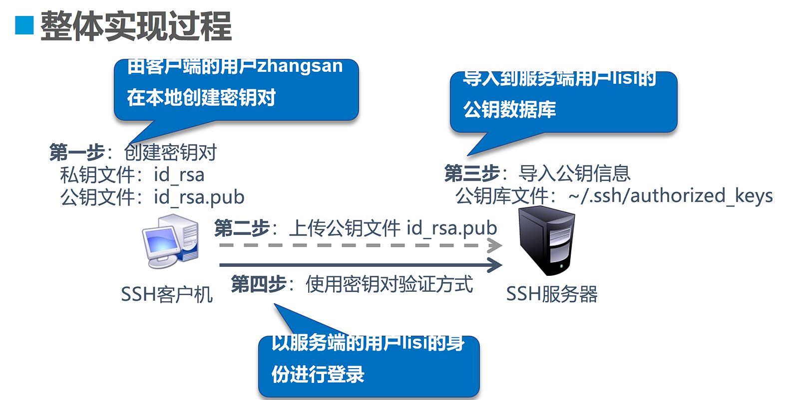
#####1）在客户端创建密钥对
在linux系统中，通过ssh-keygen工具为当前用户创建密钥对文件。可用的加密算法为RSA 或DSA（“ssh-keygen”命令的“-t”选项用于指定RSA算法类型）。
1 | [zhangsan@localhost ~]$ ssh-keygen -t ecdsa |
提示指定私钥文件的存放位置时，一般直接按Enter键即可，最后生成的私钥，公钥文件默认存放在宿主目录中的隐藏文件夹.ssh/下。
私钥短语用来对私钥文件进行保护，当使用该私钥验证登录时必须正确提供此处所设置的短语。
#####2）将公钥文件上传至服务器
将上一步生成的公钥文件上传至服务器，并部署到服务器端用户的公钥数据库中。
任何方式均可（共享、FTP、Email、SCP、……）
1 | [zhangsan@localhost ~]$ scp ~/.ssh/id_ecdsa.pub root@172.16.16.22:/tmp |
#####3）在服务器中导入公钥文本
在服务器中，公钥数据库位于/.ss 目录，默认的文件名authorized_keys。当获得客户机发送过来的公钥文件以后，可以通过重定向将公钥文本内容追加到目标用户的公钥数据库中。/.ssh/authorized_keys
将公钥文本添加至目标用户的公钥库
默认公钥库位置：
1 | [root@localhost ~]# mkdir /home/lisi/.ssh/ |
用于sshd服务器默认采用严格的权限检测模式（StrictModes yes），因此还需要注意公钥库文件 authorized_keys的权限————要求是登录的目标用户或root用户，同组或其他用户对该文件不能用写入权限，否则可能无法成功使用密钥对验证。
#####4）客户端使用密钥对验证登录
验证用户：服务端的用户lisi
验证密码：客户端的用户zhangsan的私钥短语
1 | [zhangsan@localhost ~]$ ssh lisi@172.16.16.22 |
** 第二步和第三步可以采用另一种方法，即使用“ssh-copy-id -i 公钥文件 user@host”格式，
-i 选项指定公钥文件，user 是指定主机用户。
1 | ssh-copy-id -i 公钥文件 user@host |
验证密码后，会将公钥自动添加到目标主机user 宿主目录下的.ssh/authorized_keys 文件结尾。
1 | [zhangsan@localhost ~]$ ssh-copy-id -i ~/.ssh/id_rsa.pub lisi@172.16.16.22 |
使用密钥对验证的方式登录时，不需要知道目标用户的密码，而是改为验证客户端用户的私钥短语并检测双方的私钥，公钥文件是否配对，这样安全性更高。
TCP Wrappers 访问控制
TCP Wrappers 将其他的TCP服务程序“包裹”起来，增加一个安全检测过程，外来连接请求必须先通过这层安全检测，获得许可后才能访问真正的服务程序。
TCP Wrappers 的访问控制时基于TCP协议的应用服务。
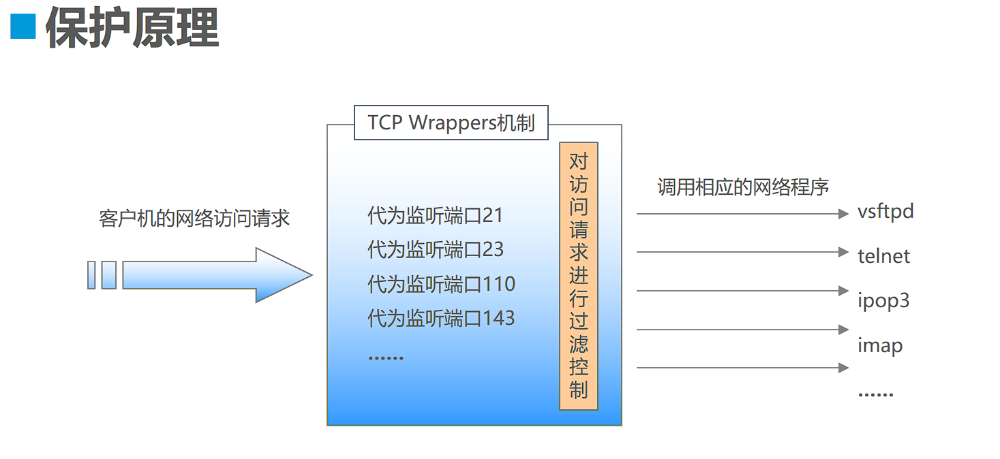
- 缺点：第一，TCP Wrappers 只能控制TCP协议的应用服务；
第二，并不是所有基于TCP协议的应用服务都能接受TCP Wrappers 的控制。
######tcp wrappers软件包提供了执行程序tcpd和共享链接库文件libwrap.so.* ，对应TCP Wrappers保护机制的两种实现方式—————直接使用tcpd程序对其他服务程序进行保护，需要运行tcpd；由其他网络服务程序调用libwrap.so.* 链接库，不需要运行tcpd程序。
1 | # ldd /use/sbin/sshd | grep "libwrap" |
####访问控制策略的配置文件
/etc/hosts.allow
/etc/hosts.deny
设置访问控制策略
策略格式：服务列表:客户机地址列表 <服务程序列表>:<客户机地址列表>
服务列表
多个服务以逗号分隔，ALL 表示所有服务
客户机地址列表
多个地址以逗号分隔，ALL表示所有地址
允许使用通配符 ? 和 *
网段地址，如 192.168.4. 或者 192.168.4.0/255.255.255.0
区域地址，如 .benet.com
######策略的应用顺序
先检查hosts.allow，找到匹配则允许访问
否则再检查hosts.deny，找到则拒绝访问
若两个文件中均无匹配策略，则默认允许访问
#####策略应用示例
仅允许从以下地址访问sshd服务
主机61.63.65.67
网段192.168.2.0/24
禁止其他所有地址访问受保护的服务
1 | [root@localhost ~]# vi /etc/hosts.allow |
###本章总结
SSH 服务器支持两种登录验证方式：密码验证，密钥对验证。
SSH 服务的安全控制包括修改监听端口，禁止root用户或空密码用户登录，仅允许个别用户，采用密钥对验证等。
构建SSH 密钥对验证体系时，需要将客户端的公钥发送给服务器，并将其导入目标用户的 authorized_keys 文件中。
TCP Wrappers 机制可以为网络服务提供额外安全保护，访问策略配置文件为 /etc/hosts.allow ,/etc/hosts.deny。
DNS域名解析服务
BIND 域名服务基础
DNS系统在网络中的作用就是维护着一个地址数据库，其中记录了各种主机域名与IP地址的对应关系，以便为客户程序提供正向或反向的地址查询服务，即正向解析与反向解析。
· 正向解析：根据主机名称（域名）查找对应的IP地址。
· 反向解析：根据IP地址查找对应的主机域名。
DNS系统的分布式数据结构
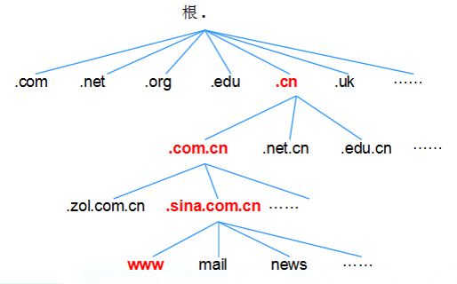
DNS 系统类型
根据所管理的区域地址数据的来源不同，DNS系统可以分为不同的类型。在同一台DNS服务器中，相对于不同的区域来说，也拥有不同的身份。常见的类型如下：
· 缓存域名服务器：也称为高速缓存服务器，通过向其他域名服务器查询获得域名->IP地址记录。
将域名查询结果缓存到本地，提高重复查询时的速度。
· 主域名服务器：特定DNS区域的官方服务器，具有唯一性。负责维护该区域所有域名->IP地址的映射记录。
· 从域名服务器：也称为辅助域名服务器，其维护的域名->IP地址记录，来源于主域名服务器。
BIND 域名服务
·BIND（Berkeley Internet Name Daemon）
伯克利 Internet 域名服务 官方战点：www.isc.org/
相关软件包
1 | bind-9.9.4-37.el7.x86_64.rpm //提供了域名服务的主要程序及相关文件 |
BIND 服务端程序
主要执行程序：/usr/sbin/named
默认监听端口：53
主配置文件：/etc/named.conf
保存DNS 解析记录的数据文件位于：/var/named/
1 | [root@www Packages]# ls | grep bind |
BIND 服务的配置文件
使用BIND软件构件域名服务时，主要涉及两种类型的配置文件：
主配置文件：用于设置named 服务的全局选项，注册区域及访问控制等各种运行参数。
区域数据文件：用于存放某个DNS 区域的地址解析记录（正向或反向记录）。
主配置文件
主配置文件named.conf 通常位于/etc/目录下，在named.conf文件中，主要包括全局配置，区域配置两个部分，每一条配置记录的行尾以分号“；”表示结束，以“#” 号或“//”开始的部分表示注释文字（大段注释可以使用“/······/”的格式）。
全局配置部分。
全局配置参数包括在形如“options{};” 的大括号中，如可以设置监听的地址和端口，区域数据文件存放的目录，允许那些客户机查询等。
1 | [root@www ~]# vim /etc/named.conf |
区域配置部分
设置本服务器提供域名解析的特定DNS区域，包括域名，服务器角色，数据文件名等
使用 zone“区域名”IN{……}; 的配置段。
区域类型按照 解析方向可分为 正向区域，方向区域。
1 | [root@www ~]# vim /etc/named.rfc1912.zones |
注：1.）每个zone 区域都是可选的(包括根域，回环域，反向域)，具体根据实际需要而定，zone配置部分的”IN”关键字也可以省略。
2.）反向区域的名称由倒序的网络地址和“.in-addr.arpa” 组合而成。例如，对于192.168.1.0/24网段，其相反区域名称表示为“1.168.192.in-addr-arpa”。
3.）file配置项用于指定实际的区域数据文件，文件名称由管理员自行设置。
4.）区域配置中的部分参数（如 allow-transfer）也可以放在全局配置里。
修改完主配置文件以后，可执行 named-checkconf 命令对named.conf 文件进行语法检查。
带“-z” 选项的named-checkconf 命令还可以尝试加载主配置文件中对应得区域数据库文件，并检查该文件是否存在问题。
1 | [root@www ~]# named-checkconf -z /etc/named.conf |
区域数据配置文件
区域数据配置文件通常位于/var/named/目录下，每个区域数据文件对应一个DNS解析区域，文件名及内容用该域的管理员自行设置。
根域“.”的区域数据文件比较特殊。Internet 中所有的DNS服务器都使用同一份根区域数据文件，其中列出了所有根服务器的域名和IP地址。
在区域数据文件中，主要包括TTL配置项，SOA（Start Of Authority，授权信息开始）记录，地址解析记录。文件中的注释信息以分号“;”开始。
全局TTL配置及SOA记录
$TTL（Time To Live，生存时间）记录
SOA（Start Of Authority，授权信息开始）记录
分号“;”开始部分表示注释信息
1 | $TTL 86400 //有效解析记录的生存周期 |
地址解析记录部分
NS ：域名服务器（Name Server）记录当前区域的DNS服务器的主机地址。
MX ：邮件交换（Mail Exchange）记录当前区域的邮件服务器的主机地址。 数字10/表示优先级越大越低。
A ：地址（Address）记录正向解析条目。
CNAME ：别名（Canonical Name）记录某一正向解析条目的其他名称。
1 | @ IN NS ns1.bdqn.com. |
当多台服务器同时为一个网站提供服务时，可以在区域数据文件添加同一域名对应多个IP地址的域名解析记录，这是基于域名解析的负载均衡：
1 | www IN A 173.16.16.173 |
当然也有一台服务器需要同时承载某个DNS区域内的许多个不同域名的时候（如IDC 的虚拟主机服务器，提供个人主页空间的网站服务器等），可以在区域数据文件的最后一行添加 泛域名解析记录，
即使用 “ * ” 以匹配任意主机名。
1 | * IN A 173.16.16.173 |
在反向区域数据文件中，不会用到A地址记录，而是使用PTR指针（Point）记录。
例如：对于反向区域 16.16.173.in-addr.arpa ,添加的反向解析记录可以是以下形式。
1 | 1 IN PTR www.kgc.cn. |
注：使用PTR记录时，第一列只需要指明对应IP地址的“主机地址”部分即可，如“1” “4”等，系统在查找地址记录时会自动将当前方向域的网络地址作为前缀。
例如：上述文件中的“4 IN PTR mail.kgc.cn.”，表示IP地址为173.16.16.4 的主机的域名为 mial.kgc.cn. 。
在区域数据配置文件中，凡是不以点号“.”结尾的主机地址，系统在查找地址记录时都会自动将当前的域名作为后缀。
例如，若当前的DNS域为“kgc.cn”，则在文件中的主机地址“www”相当于“www.kgc.cn.” 。因此，当使用完整的FQDN地址时，务必记得地址末尾的点号“.”不能省略。
修改完区域数据文件以后，可执行 named-checkconf 命令对该文件进行语法检查。
依次指定 区域名称 ，数据文件名作为参数。如果文件中没有语法错位，系统将给出“OK”的提示信息。
1 |
构建缓存域名服务器
缓存域名服务器通常架设在公司的局域网内，主要目的是 提高域名解析的速度，减少对互联网访问的出口流量。
例如：在小型企业的内部网络中，可单独建立一台（或集成在网关主机中）缓存域名服务器，为各部门的员工计算机提供DNS解析服务。
本案例使用的基本环境和要求如下所诉：
1.）缓存域名服务器的IP地址为192.168.160.7，并能够正常访问互联网。
2.）缓存域名服务器代为处理客户端的DNS解析请求，并缓存查询结果。
3.）局域网内的各PC 将首选DNS服务器地址设为192.168.160.7。
建立主配置文件 named.conf
1 | [root@www named]# vim /etc/named.conf |
上述配置内容中，添加了“zone”.”IN{};” 部分的根区域设置，尽管缓存服务器并没有自主控制的区域数据，但可以向根服务器进行迭代查询，并将最终获得的解析结果反馈给客户。
有时候为了提高解析效率，也可以不向根区域查询，而是将来自客户端的查询请求转发给国内电信运营商的DNS服务器（如北京的 202.106.0.20 , 202.106.148.1），缓存服务器收到返回的查询结果后再传递给客户端。只要去掉“zone”.” IN{······};” 的设置，并在全局配置中正确设置 forwarders 参数即可实现该功能。
1 | [root@www named]# vim /etc/named.conf |
确认根域的区域数据文件 named.ca
根区域的区域数据文件默认位于文件/var/named/named.ca 中，该文件记录了Internet中13台根域服务器的域名和IP地址和等相关信息。
启动named 服务
执行“systemctl start named” 命令，启动named服务，并通过netstat命令确认named服务的端口监听状态。
若服务启动失败或发现没有正常监听UDP53端口，可以根据错误提示信息（或者/var/log/messages 文件中的日志记录）排除错误，然后重启服务即可。
1 | [root@www named]# systemctl start named |
验证缓存域名服务器
1 | [root@localhost ~]# nslookup www.baidu.com |
构建主从域名服务器
建立主要配置文件 named.conf
1 | [root@ns1 etc]# vim named.conf |
修改区域配置文件
1 | [root@ns1 etc]# vim /etc/named.rfc1912.zones |
建立正，反向区域数据文件
1 | [root@ns1 etc]# cd /var/named/ |
启动 named 服务或重载配置
1 | [root@ns1 named]# systemctl stop named |
验证主域名服务器
1 | C:\Users\Zeluo>nslookup www.kgc.com |
构建从域名服务器
修改配置文件修改配置文件named.conf
1 | [root@ns2 ~]# vim /etc/named.conf |
启动named服务，验证是否下载成功
1 | [root@ns2 ~]# systemctl start named |
###知识点总结
1）DNS系统主要提供以下功能：根据域名查找IP地址（正向解析），根据IP地址查找域名（方向解析）。
2）常见的DNS服务器类型包括：缓存域名服务器，主域名服务器，从域名服务器。
3）DNS服务的配置文件主要包括：主配置文件named.conf（包括区域配置文件named.rfc1912.zones），各个解析区域的区域数据文件。
4）主，从域名服务器是根据SOA记录中的更新序号来同步主，从服务器的区域数据文件。
5）主域名服务器配置“also-notify {从域名服务器地址；}；” 后，当主域名服务器上数据文件发生变化，会主动通知从域名服务器。
6）分离解析的域名服务器实际也还是主域名服务器，可以根据不同的客户端提供不同的域名解析记录。
#####配置服务器流程
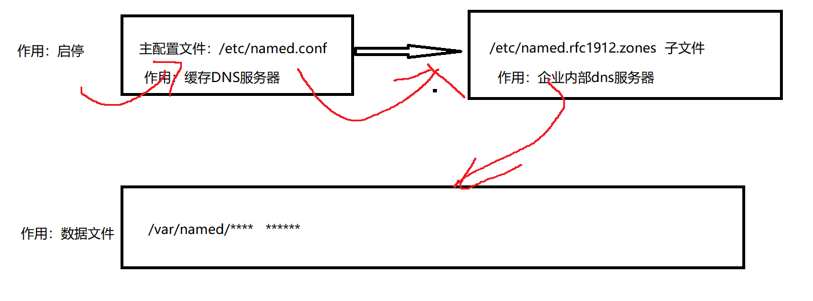
FTP文件传输服务
FTP 服务基础
FTP（File Transfer Protocol，文件传输协议）是典型的C/S结构的应用层协议，需要由服务端软件，客户端软件两个部分共同实现文件传输功能。
FTP 连接及传输模式
FTP服务器默认使用TCP协议的20，21端口与客户端进行通信。20端口用于建立数据连接，并传输文件数据；21端口用于建立控制连接，并传输FTP控制命令。
根据FTP服务器在建立数据连接过程中的主，被动关系，FTP数据连接分为主动模式和被动模式，
服务器主动发起数据连接。首先由客户端向服务端的21端口建立FTP控制连接，当需要传输数据时，客户端以PORT命令告知服务器“我打开了某端口，你过来连接我”，于是服务器从20端口向客户端的该端口发送请求并建立数据连接。
主动模式：服务端从20端口主动向客户端发起连接。
服务器被动等待数据连接。如果客户机所在的网络的防火墙禁止主动模式连接，通常会使用被动模式。首先由客户端向服务端的21端口建立FTP控制连接，当需要传输数据时，服务器以PASV命令告知客户端“我打开了某端口，你过来连接我”，于是客户端向服务器的该端口（非20）发送请求并建立数据连接。
被动模式：服务端在指定范围内某个端口被动等待客户端连接。
FTP 传输模式
客户端与服务器建立好数据连接以后，就可以根据从控制连接中发送的FTP命令上传或下载文件了。在传输文件时，根据是否进行字符转换，分为 文本模式和二进制模式。
文本模式：ASCLL模式，以文本序列传输数据。
二进制模式：Binary模式，以二进制序列传输数据。
FTP 用户类型
匿名用户：用户名为 ftp或anonymous，提供任意密码（包括空密码）都可以通过服务器的验证。
本地用户：FTP服务器可以直接使用本机的系统用户账号来进行验证。对于vsftpd服务来说，本地用户指的是除了匿名用户以外的其他系统用户。
客户端丰富的访问方式
a，windows自带的资源管理器
b，cmd（使用命令）
c，第三方工具flashFXP filezillar
Vsftpd软件包
官方站点：vsftpd.beasts.org
主程序：/usr/sbin/vsftpd
服务名：vsftpd
用户控制列表文件：/etc/vsftpd/ftpusers /etc/vsftpd/user_list
主配置文件：/etc/vsftpd/vsftpd.conf
安装Vsftpd
1 | [root@www ~]# rpm -qa | grep vsftpd* //查看是否安装vsftpd |
匿名访问的FTP服务
访问匿名FTP服务器时，不需要密码验证，任何人都可以使用，非常方便。当需要提供公开访问的文件下载资源，或者让用户上传一下不需要保密的数据资料时，可以搭建匿名FTP服务器。
1，准备匿名FTP访问的目录
centOS6.5 系统中，FTP匿名用户对应的系统用户为ftp，其宿主目录/var/ftp/ 也就是匿名访问vsftpd服务时所在的FTP根目录。（基于安全性考虑，FTP根目录的权限不允许匿名用户或其他用户有写入权限。）
/var/ftp/目录下默认设置了一个名为pub的子文件夹，可以在匿名访问FTP时供上传文件使用。
执行以下操作可以使匿名用户ftp对该目录拥有写入权限，以便上传数据。
1 | [root@www ~]# chown ftp /var/ftp/pub/ //改变属主为ftp |
2，开放匿名用户配置并启动 vsftpd 服务。
配置文件的参数：
· write_enable：用于启动/禁止 vsftpd服务的写入权限，是全局性选项。
· anon_upload_enanle：允许/禁止匿名用户在现有的可写入目录中上传文件。
· anon_mkdir_write_enable：允许/禁止匿名用户在现有的可写目录中创建文件夹，及上传目录。
· anon_other_write_enable：允许/禁止匿名用户的其他写入权限，包括删除，改名，覆盖等操作。
1，匿名服务器的连接（独立的服务器）
在/etc/vsftpd/vsftpd.conf 配置文件中添加如下几项：
1 | [root@www ~]# cp /etc/vsftpd/vsftpd.conf /etc/vsftpd/vsftpd.conf.bak |
功能：只能连接FTP服务器，不能上传和下传
注：其中所有和日志欢迎信息相关连的都是可选项，打了星号的无论什么账号都要添加，是属于FTP的基本选项。
2，开启匿名FTP服务器上传权限
在配置文件中添加以下的信息即可：
1 | Anon_upload_enable=yes //开放上传权限 |
3，开启匿名服务器下传的权限
在配置文件中添加如下信息即可：
1 | Anon_world_readable_only=no |
4，普通用户FTP服务器的连接（独立服务器）
在配置文件中添加如下信息即可:
1 | Local_enble=yes //本地帐户能够登陆 |
5，限定用户进入其主目录以外的目录
设置所有的本地用户都执行：
1 | chroot_local_user=yes //本地所有帐户都只能在自家目录 |
设置指定用户执行
1 | chroot_list_enable=yes //chroot_list_file文件中的名单可以调用） |
注：chroot_list 默认是不存在的，需要自己手动添加，在该文件中加入想要控制权限的用户名即可。
特别说明：当chroot_local_user=yes 时，chroot_list_file 中指定的用户将不会限定在用户目录，其他用户都被限定了；只有当chroot_local_user=no 时，chroot_lis_file 中指定的用户才是禁止访问用户目录以外的路径。
特别提醒：设置完以后 有可能出现以下报错
1 | 500 OOPS: vsftpd: refusing to run with writable root inside chroot () |
要修复这个错误，可以用命令chmod a-w /home/user去除用户主目录的写权限，注意把目录替换成你自己的。或者你可以在vsftpd的配置文件中增加下列两项中的一项：
1 | allow_writeable_chroot=YES |
6，限制本地用户访问FTP
1 | Userlist_enable=yes //用userlist 来限制用户访问） |
注：开启 userlist_enable=yes 匿名账号不能登录。
7，一些安全选项
1 |
|
8，新建FTP用户，并指定用户的默认FTP目录（不通过指定用户目录的方式）
创建FTP用户，限定其登录操作系统：
1 | #useradd -s /sbin/nologin -g ftp newUser |
添加用户配置文件目录
1 | #vi /etc/vsftpd/vsftp.conf |
创建该用户的FTP根目录：
1 | #mkdir -p /var/www/bbs/ |
指定nweUser用户的FTP根目录：
1 | #vi /var/ftp/boy |
重启vsftpd服务即可。
9，查看谁登录了FTP，并杀死它的进程
1 | ps –xf |grep ftp |
开启虚拟账号
首先要知道什么是虚拟账户：虚拟账户是FTP服务提供的专用账户，它不属于操作系统的账户，而只能够登录FTP服务器。所有的虚拟账户都对应着同一个操作系统账户，也就是说所有虚拟账户的权限都受到该操作系统账户的权限限制。下面来看一下增加FTP虚拟账户的步骤：
1，在操作系统中添加一个FTP虚拟账户对应的本地账户（由于是FTP虚拟账户，所以对应的本地账户不应该指定较高权限，-s /sbin/nologin表示不允许登陆操作系统）
1 | #useradd -d /home/vftpuser -s /sbin/nologin vftpuser |
2，编写一个账户信息文件，并生成对应的账户信息数据库
1 | #vi /etc/vsftpd/vftpuser.txt |
注意：如果要添加更多的账户，在vftpuser.txt文件中添加新用户名和密码，然后重新调用db_load生成vftpuser.db即可。
3，开启PAM账号认证
1 | #vi /etc/pam.d/vsftpd |
注意：上面红色的关键字如果是required，则会造成本地账户无法同时登陆。
4，开启vsftpd服务对虚拟账户的支持
1 | #vi /etc/vsftpd/vsftpd.conf |
5，给FTP虚拟账户指定参数，每一个账户都用一个同名文件来指定权限（下面以user1用户为例）
1 | vi /etc/vsftpd/vsftpd_config_dir/user1 |
6，重新启动vsftpd服务使配置生效
1 | #service vsftpd restart |
小问题汇集：
<1>vsftpd连接速度非常慢，需要等上十几秒，这是为什么？
解答：原因是vsftp在登陆时做了DNS检查来确认域名，解决办法有两个：1、在resolv.conf文件中删除localhost或者127.0.0.1这样的地址；2、在vsftpd.conf文件中加入：reverse_lookup_enable=NO。
<2>如何指定特定用户的操作权限？
解答：在vsftp的配置文件/etc/vsftpd.conf里头添加这么一行：user_config_dir=/etc/vsftpd_user_conf，然后在/etc/vsftpd_user_conf目录里头创建和用户名同名的文件，比如ftpuser，添加如下内容：
1 | local_root=/vsr/www/html // 指定用户目录 |
注意，用户不能上传和删除极有可能是文件夹操作权限的问题，通过chmod可以解决。
<3>如何开启FTP操作日志功能？
解答：在vsftp的配置文件/etc/vsftp.conf里头添加如下内容，已有的进行修改即可：
1 | xferlog_enable=YES // FTP服务器记录上传下载情况 |
课后作业
使用vsftpd搭建用户验证的FTP服务器，设置白名单白名单，允许名单里面的用户上传文件到upload目录下，并能够在upload目录下执行创建文件夹，删除文件，重命名文件等操作。
1，安装vsftpd服务器
1 | [root@www ~]# yum install -y vsftpd |
2，修改配置文件
1 | [root@www ~]# vim /etc/vsftpd/vsftpd.conf |
3，创建upload目录。修改user_list写入用户，创建chroot_list，并写入用户。
1 | [root@www ~]# cd /var/ftp/ |
4，关闭防火墙，并启动vsftpd服务器
1 | [root@www ftp]# systemctl stop firewalld |
5，客户端验证
登录成功可以上传下传文件。且可以创建文件夹
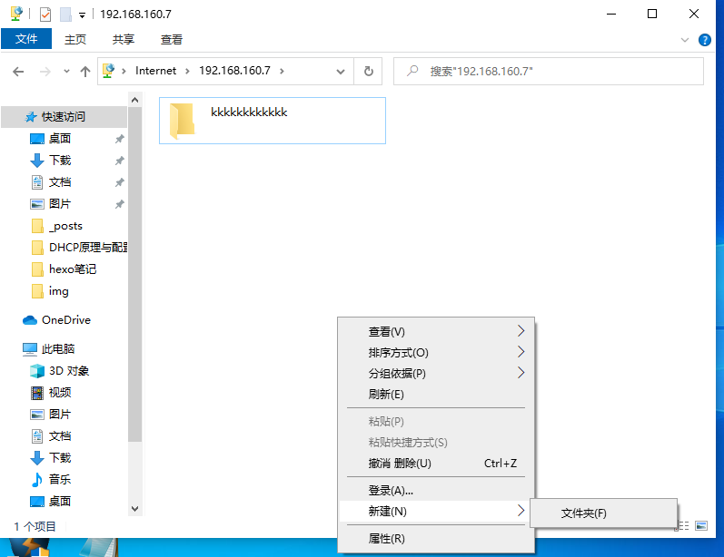
且不能切换目录验证
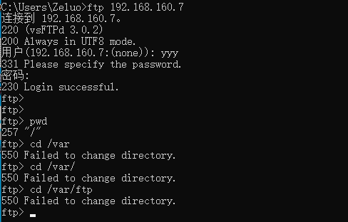
DHCP服务部署
DHCP服务器为不同网段自动分配IP地址
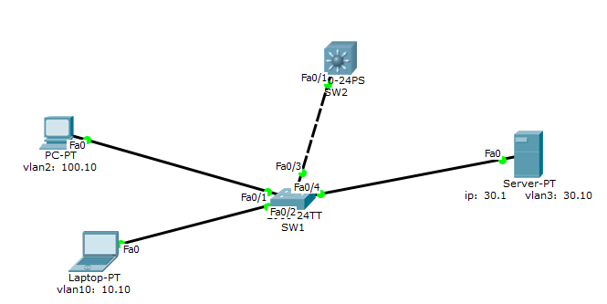
配置SW1
1 | SW1>en |
配置SW2
1 | SW2>en |
配置DHCP服务器
手工配置服务器IP地址
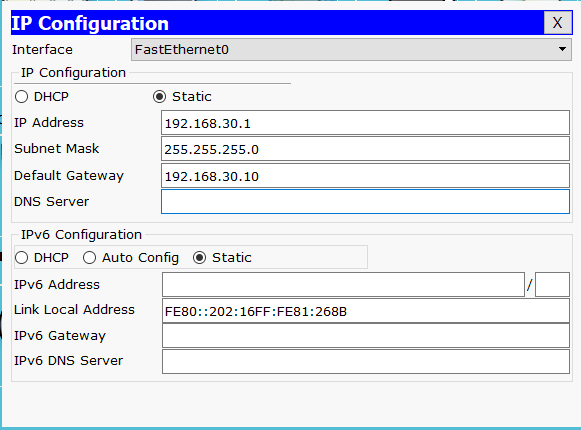
打开DHCP功能，配置分配地址和范围
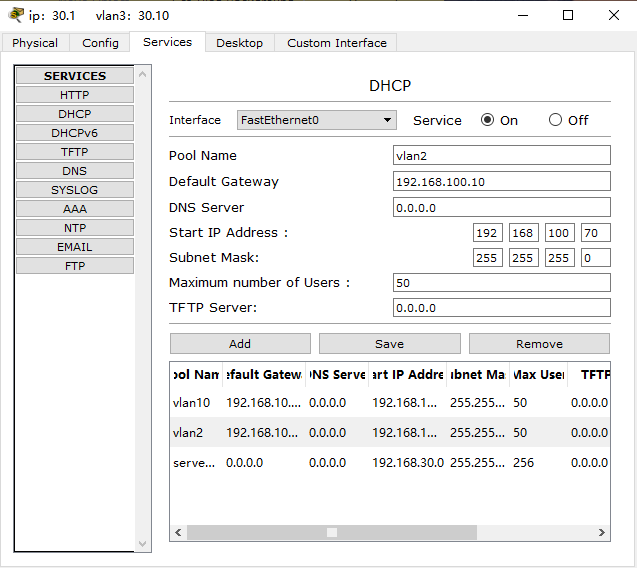
配置好以后自动获取的地址
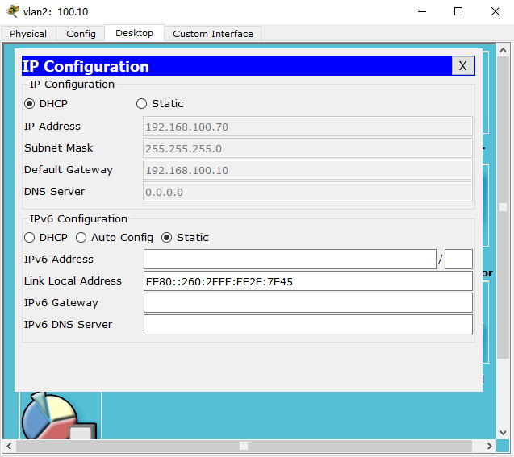
GNS3 模拟配置DHCP服务器
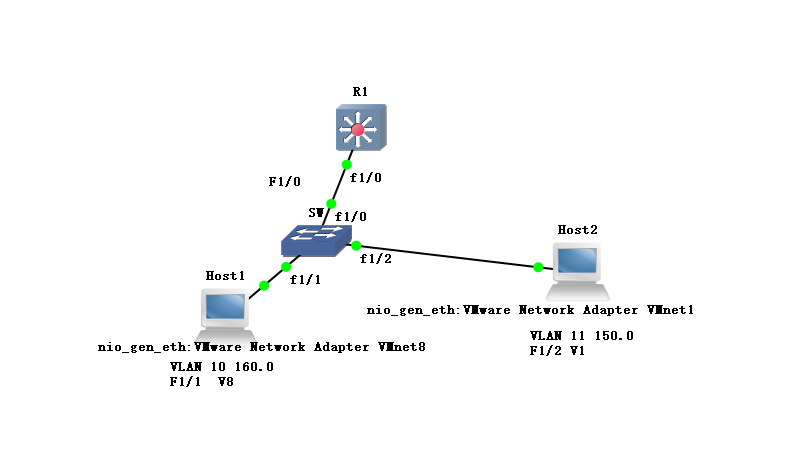
Host1作为DHCP服务器为网段为150.0的Host2自动分配地址
首先修改交换机 SW 配置
1 | SW#vlan database |
然后 配置三层交换机 R1
1 | R1#vlan database |
配置 DHCP服务器配置文件
1 | [root@www ~]# rpm -qc dhcp |
然后切换网卡登录另外一台主机
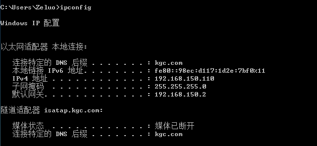
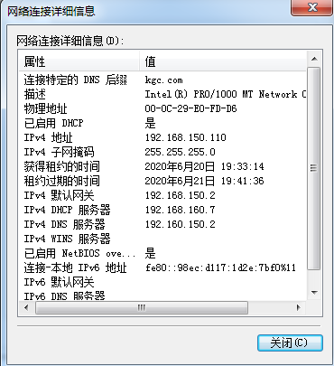
Samba文件共享服务
Samba服务
在Windows网络环境中，主机之间进行文件和打印机共享是通过微软公司自己的 SMB/CIFS 网络协议实现的。
SMB(Server Message Block，服务消息块)和CIFS(Common Internet File System,通用互联网文件系统)协议是微软私有协议。
Samba 是著名的开源软件项目之一，它在Linux/UNIX 系统中实现了微软的SMB/CIFS 网络协议，从而使得跨平台的文件共享变得更加容易。在部署Windows，Linux/UNIX混合平台的企业环境时，选用Samba 可以很好地解决不同系统之间的文件互访问题。
Samba 软件包的构成
在CentOS7系统中DVD安装光盘中可以找到与Samba相关的几个软件包，主要包括服务端软件 samba，客户端软件samba-client，用于提供服务端和客户端程序的公共组件 samba-common。
SMB(Server Message Block，服务消息块)
CIFS(Common Internet File System,通用互联网文件系统)
1 | [root@localhost ~]# yum install -y samba //yum 方式安装samba |
Samba 服务器的主要程序
samba：提供对服务器中文件，打印资源的共享访问
nmbd：提供基于NetBios主机名称的解析
Samba 的配置目录及文件
/etc/samba/
/etc/samba/smb.conf
配置文件检索工具：testparm
smb.conf 文件的配置内容
[global]：全局设置
[homes]：用户目录共享设置
[printers]：打印机共享设置
[myshare]：自定义名称的共享目录设置
辅助配置内容
注释行：以 # 号开头的行
配置样例行：以 ; 号开头的行
结合 grep 命令可以提取有效配置行
grep -v “^#” smb.conf | grep -v “^;” | grep -v ^$
常见共享目录配置项的含义
comment：对共享目录的注释、说明信息
path：共享目录在服务器中对应的实际路径
browseable：该共享目录在“网上邻居”中是否可见
guest ok：是否允许所有人访问，等效于“public”
writable：是否可写，与 read only 的作用相反
常见共享目录配置项的含义
comment：对共享目录的注释、说明信息
path：共享目录在服务器中对应的实际路径
browseable：该共享目录在“网上邻居”中是否可见
guest ok：是否允许所有人访问，等效于“public”
writable：是否可写，与 read only 的作用相反
建立 Samba 用户数据库文件
默认数据库文件位/var/lib/samba/private/passdb.tdb
设置用户访问授权
新建共享目录与共享用户
修改 smb.conf 配置文件，添加名为 tools 的共享目录
重新加载 smb.conf 文件，或重启 smb 服务
确定用户访问权限
设置目录权限
设置上传文件和目录的默认权限
搭建Samba服务器
修改配置文件
1 | [root@localhost ~]# cd /etc/samba |
Samba共享用户=系统用户 —》 samba程序用户数据库
文件夹权限：系统权限＋共享权限
1 | [root@localhost ~]# useradd yyy //创建用户yyy |
启动samba程序
1 | [root@localhost samba]# systemctl start smb |
Windows登录共享 \网络地址
用户名和密码
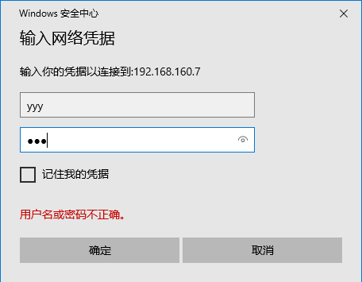
成功登录到samba共享服务器
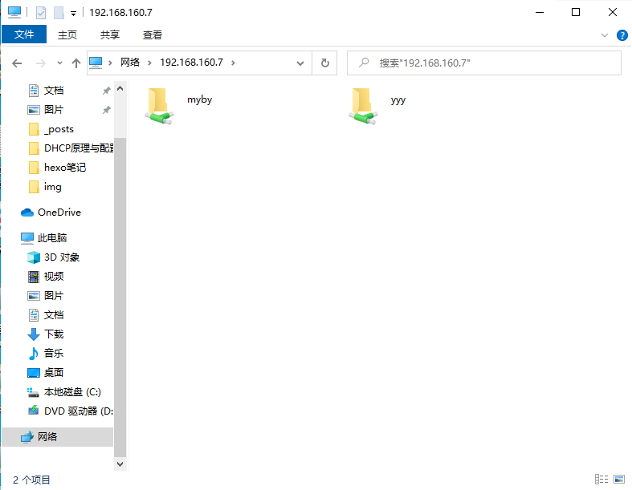
linux登录共享
1 | [root@localhost ~]# yum install -y samba-client //安装samba客户端 |
命令总结
1 | grep -v “^#”smb.conf | grep -v “^;”|grep -v “^$” 过滤注释、;样本、空行。 |
DHCP原理与配置
DHCP工作原理
动态主机设置协定（DHCP）是一种使网络管理员能够集中管理和自动分配IP网络地址的通信协议。在IP网络中，每个连接Internet的设备都需要分配唯一的IP地址。DHCP使网络管理员能从中心结点监控和分配IP地址。当某台计算机移到网络中的其它位置时，能自动收到新的IP地址。
DHCP使用了租约的概念，或称为计算机IP地址的有效期。租用时间是不定的，主要取决于用户在某地联接Internet需要多久，这对于教育行业和其它用户频繁改变的环境是很实用的。通过较短的租期，DHCP能够在一个计算机比可用IP地址多的环境中动态地重新配置网络。DHCP支持为计算机分配静态地址，如需要永久性IP地址的Web服务器。
DHCP的优势
减少管理员的工作量
避免IP地址冲突
当网络更改IP地址段时，不需要再重新配置每个用户的IP地址
提高了IP地址的利用率
方便客户端的配置
DHCP租约过程
客户机从DHCP服务器获得IP地址的过程称为DHCP的租约过程。
租约过程分为四个步骤：
第一步：
客户机请求IP地址
当一个DHCP客户机启动时，客户机还没有IP地址，所以客户机要通过DHCP获取一个合法的地址
此时DHCP客户机以广播方式发送DHCP Discover发现信息来寻找DHCP服务器。
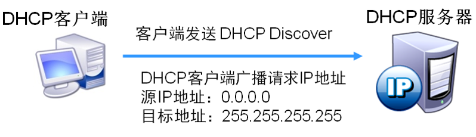
1 | 源地址：0.0.0.0 |
第二步：
服务器响应
当DHCP服务器接收到来自客户机请求IP地址的信息时，它就在自己的IP地址池中查找是否有合法的
IP地址提供给客户机，如果有，DHCP服务器就将此IP地址做上标记，加入到DHCP Offer的消息中，
然后DHCP服务器就广播一则DHCP Offer消息。
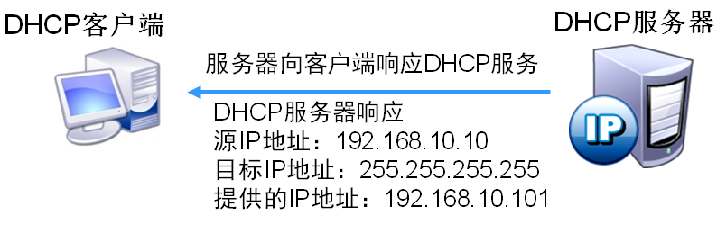
1 | 源地址：服务器的IP地址 |
第三步：
客户机选择IP地址
DHCP客户机从接收到的第一个DHCP Offer消息中提取IP地址，发出IP地址的DHCP服务器将该地址保留，
这样该地址就不能再分配给另一个DHCP客户机。
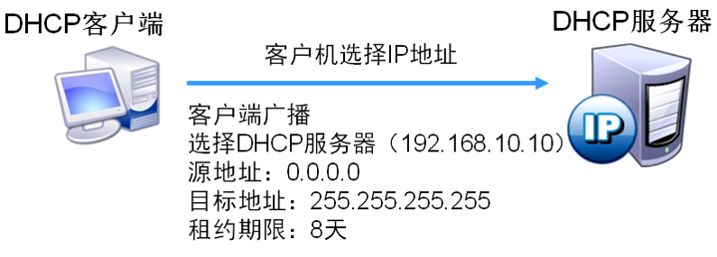
1 | 源地址：0.0.0.0 |
第四步：
服务器确定租约
DHCP服务器接收到DHCP Request消息后，以DHCP ACK消息的形式向客户机广播成功确认，该消息包含有
IP地址的有效租约和其他可配置的信息。
当客户机收到DHCP ACK消息时，它就配置了IP地址，完成TCP/IP的初始化。
第五步：
更新登录
DHCP客户机每次重新登录网络时，不需要再发送DHCP Discover信息，而是直接发送包含前一次所分配的
IP地址的DHCP Request请求信息。
第六步：
更新租约
当DHCP服务器向客户机出租的IP地址租期达到50%时，就需要更新租约。
客户机直接向提供租约的服务器发送DHCP Request包，要求更新现有的地址租约。
DHCP服务
为大量客户机自动分配地址，提供集中管理。
减轻管理和维护成本、提高网络配置效率。
可分配的地址信息主要包括
网卡的IP地址、子网掩码
对应的网络地址、广播地址
默认网关地址
DNS服务器地址
安装 DHCP 服务器
第一种：rpm安装方式（手动解决依赖关系）
1 | [root@www Packages]# rpm -ivh dhcp-4.2.5-68.el7.centos.x86_64.rpm |
第二种：YUM方式安装（自动解决依赖关系，配置仓库）
1 | [root@www ~]# cd /etc/yum.repos.d/ |
DHCP服务器软件
1 | CentOS光盘中的 dhcp-4.2.5-47.el7.centos.x86_64.rpm |
主要配置文件
dhcpd.conf 的内容构成
1 | # |
修改配置文件
1 | option domain-name "kgc.com"; |
Subnet 网段声明，作用于整个子网段
range 参数：设置用于分配的 IP 地址池
option subnet-mask 参数：设置客户机的子网掩码
option routers 参数：设置客户机的默认网关地址
1 | [root@localhost ~]# vi /etc/dhcp/dhcpd.conf |
host 主机声明，作用于单个主机
hardware ethernet 参数：指定对应主机的 MAC 地址
fixed-address 参数：指定为该主机保留的 IP 地址
1 | host prtsvr { |
启动 DHCP 服务
查看租约文件 /var/lib/dhcpd/dhcpd.lease
1 | [ root@localhost ~]# less /var/lib/dhcpd/dhcpd.leases |
使用 DHCP 客户端
两种使用方式
1）修改网卡配置文件 （如 ifcfg-ens33）
BOOTPROTO=dhcp
1 | [root@localhost ~]# vi /etc/sysconfig/network-scripts/ifcfg-ens33 |
2）使用dhclient 命令
1 | dhclient [-d] [网络接口名] |
1 | [root@localhost ~]# dhclient -d ens33 \\ dhclient -r |
DHCP 中继原理
当企业的内部网络规模较大时，通常被划分为多个不同的子网，网络内配置了VLAN，VLAN能隔离广播，而DHCP协议使用广播
DHCP服务器在VLAN 100中，就只有VLAN 100内的客户机能从DHCP服务器那里获取IP地址
如果VLAN 2或VLAN 3的客户机也需要通过这台DHCP服务器来获取IP地址，该怎么办呢？
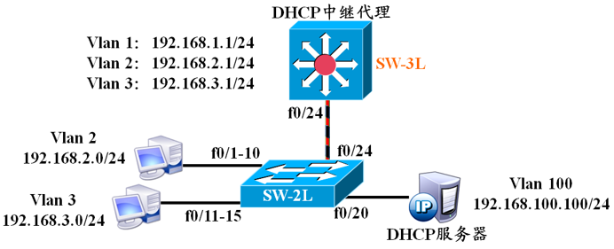
解决的办法有两种：
1）为每个网段安装一台DHCP服务器，但这种方式存在资源上的浪费，而且不利于集中管理。
2）在连接不同网段的设备上开启DHCP中继功能，将DHCP这种特殊的广播信息在VLAN之间转发，让其他VLAN的客户机也能从DHCP服务器哪里获得IP地址。
DHCP中继的配置命令
1 | ip helper-address DHCPsrv-IPAddress |
在三层交换机上配置DHCP中继转发，是在不包含DHCP服务器的VLAN上配置实现的
1 | SW-3L(config)#interface vlan 2 |
1 | SW-3L(config)#interface vlan 3 |
1 | SW-3L(config)#interface vlan 100 |